9 Couches
9.1 Introduction
Dans le Chapitre 1, vous avez appris à faire bien plus que de simples nuages de points, diagrammes en barres et boîtes à moustaches. Vous avez assimilé les bases qui vous permettront de créer n’importe quel type de graphique avec ggplot2.
Dans ce chapitre, vous approfondirez ces bases en découvrant la grammaire en couches des graphiques. Nous commencerons par une exploration plus détaillée des mappages esthétiques, des objets géométriques et des facettes. Vous apprendrez ensuite les transformations statistiques que ggplot2 effectue en arrière-plan lors de la création d’un graphique. Ces transformations servent à calculer de nouvelles valeurs à représenter, comme les hauteurs des barres dans un diagramme en barres ou les médianes dans une boîte à moustaches. Vous découvrirez également les ajustements de position, qui modifient la façon dont les geoms sont affichés dans vos graphiques. Enfin, nous introduirons brièvement les systèmes de coordonnées.
Nous ne présenterons pas chaque fonction et option pour chaque couche, mais nous vous guiderons à travers les fonctionnalités les plus importantes et les plus couramment utilisées fournies par ggplot2, et nous vous présenterons les packages qui étendent ggplot2.
9.1.1 Prérequis
Ce chapitre se concentre sur ggplot2. Pour accéder aux jeux de données, pages d’aide et fonctions utilisées dans ce chapitre, chargez le tidyverse en exécutant ce code :
9.2 Mappages esthétiques
« La plus grande utilité d’une image, c’est quand elle nous force à remarquer ce que nous ne nous attendions pas à voir. » — John Tukey
Souvenez-vous que le data frame mpg fourni avec le package ggplot2 contient 234 observations sur 38 modèles de voitures.
mpg
#> # A tibble: 234 × 11
#> manufacturer model displ year cyl trans drv cty hwy fl
#> <chr> <chr> <dbl> <int> <int> <chr> <chr> <int> <int> <chr>
#> 1 audi a4 1.8 1999 4 auto(l5) f 18 29 p
#> 2 audi a4 1.8 1999 4 manual(m5) f 21 29 p
#> 3 audi a4 2 2008 4 manual(m6) f 20 31 p
#> 4 audi a4 2 2008 4 auto(av) f 21 30 p
#> 5 audi a4 2.8 1999 6 auto(l5) f 16 26 p
#> 6 audi a4 2.8 1999 6 manual(m5) f 18 26 p
#> # ℹ 228 more rows
#> # ℹ 1 more variable: class <chr>Parmi les variables dans mpg, on trouve :
displ: la cylindrée du moteur d’une voiture, en litres. La variable est numérique.hwy: l’efficacité énergétique d’une voiture sur autoroute, en miles par gallon (mpg). Une voiture avec une faible efficacité énergétique consomme plus de carburant qu’une voiture avec une haute efficacité énergétique sur la même distance. La variable est numérique.class: type de voiture. La variable est catégorique.
Commençons par visualiser la relation entre displ et hwy pour différentes classes de voitures. Nous pouvons faire cela avec un nuage de points où les variables numériques sont mappées aux esthétiques x et y et la variable catégorique est mappée à une esthétique comme color ou shape.
# Gauche
ggplot(mpg, aes(x = displ, y = hwy, color = class)) +
geom_point()
# Droite
ggplot(mpg, aes(x = displ, y = hwy, shape = class)) +
geom_point()
#> Warning: The shape palette can deal with a maximum of 6 discrete values because more
#> than 6 becomes difficult to discriminate
#> ℹ you have requested 7 values. Consider specifying shapes manually if you
#> need that many of them.
#> Warning: Removed 62 rows containing missing values or values outside the scale range
#> (`geom_point()`).![Deux nuages de points côte à côte, tous deux visualisant l'efficacité énergétique sur autoroute par rapport à la cylindrée du moteur et montrant une association négative. Dans le graphique de gauche, class est mappée à l'esthétique color, donnant différentes couleurs pour chaque classe. Dans le graphique de droite, class est mappée à l'esthétique shape, donnant différentes formes de caractères de tracé pour chaque classe, sauf pour suv. Chaque graphique est accompagné d'une légende qui montre le mappage entre color ou shape et les niveaux de la variable class.](layers_files/figure-html/unnamed-chunk-3-1.png)
![Deux nuages de points côte à côte, tous deux visualisant l'efficacité énergétique sur autoroute par rapport à la cylindrée du moteur et montrant une association négative. Dans le graphique de gauche, class est mappée à l'esthétique color, donnant différentes couleurs pour chaque classe. Dans le graphique de droite, class est mappée à l'esthétique shape, donnant différentes formes de caractères de tracé pour chaque classe, sauf pour suv. Chaque graphique est accompagné d'une légende qui montre le mappage entre color ou shape et les niveaux de la variable class.](layers_files/figure-html/unnamed-chunk-3-2.png)
Quand class est mappée à shape, nous obtenons deux avertissements :
1: The shape palette can deal with a maximum of 6 discrete values because more than 6 becomes difficult to discriminate; you have 7. Consider specifying shapes manually if you must have them.
2: Removed 62 rows containing missing values (
geom_point()).
Puisque ggplot2 n’utilise par défaut que six formes à la fois, les groupes supplémentaires ne seront pas tracés lorsque vous utiliserez l’esthétique shape. Le second avertissement est connexe – il y a 62 SUVs dans le jeu de données et ils ne sont pas tracés.
De la même façon, nous pouvons mapper class aux esthétiques size ou alpha aussi, qui contrôlent respectivement la taille et la transparence des points.
# Gauche
ggplot(mpg, aes(x = displ, y = hwy, size = class)) +
geom_point()
#> Warning: Using size for a discrete variable is not advised.
# Droite
ggplot(mpg, aes(x = displ, y = hwy, alpha = class)) +
geom_point()
#> Warning: Using alpha for a discrete variable is not advised.![Deux nuages de points côte à côte, tous deux visualisant l'efficacité énergétique sur autoroute par rapport à la cylindrée du moteur et montrant une association négative. Dans le graphique de gauche, class est mappée à l'esthétique size, donnant différentes tailles pour chaque classe. Dans le graphique de droite, class est mappée à l'esthétique alpha, donnant différents niveaux d'alpha (transparence) pour chaque classe. Chaque graphique est accompagné d'une légende qui montre le mappage entre size ou le niveau alpha et les niveaux de la variable class.](layers_files/figure-html/unnamed-chunk-4-1.png)
![Deux nuages de points côte à côte, tous deux visualisant l'efficacité énergétique sur autoroute par rapport à la cylindrée du moteur et montrant une association négative. Dans le graphique de gauche, class est mappée à l'esthétique size, donnant différentes tailles pour chaque classe. Dans le graphique de droite, class est mappée à l'esthétique alpha, donnant différents niveaux d'alpha (transparence) pour chaque classe. Chaque graphique est accompagné d'une légende qui montre le mappage entre size ou le niveau alpha et les niveaux de la variable class.](layers_files/figure-html/unnamed-chunk-4-2.png)
Ces deux graphiques produisent aussi des avertissements :
Using alpha for a discrete variable is not advised.
Mapper une variable discrète non ordonnée (catégorique) (class) à une esthétique ordonnée (size ou alpha) n’est généralement pas une bonne idée car cela implique un classement qui n’existe pas en réalité.
Une fois que vous mappez une esthétique, ggplot2 s’occupe du reste. Il sélectionne une échelle raisonnable à utiliser avec l’esthétique et construit une légende qui explique le mappage entre les niveaux et les valeurs. Pour les esthétiques x et y, ggplot2 ne crée pas de légende, mais crée une ligne d’axe avec des repères et une étiquette. La ligne d’axe fournit les mêmes informations qu’une légende ; elle explique le mappage entre les positions et les valeurs.
Vous pouvez aussi définir manuellement les propriétés visuelles de votre geom en tant qu’argument de votre fonction geom (en dehors de aes()) plutôt que de vous fier au mappage d’une variable pour déterminer l’apparence. Par exemple, nous pouvons faire que tous les points de notre graphique soient bleus :
ggplot(mpg, aes(x = displ, y = hwy)) +
geom_point(color = "blue")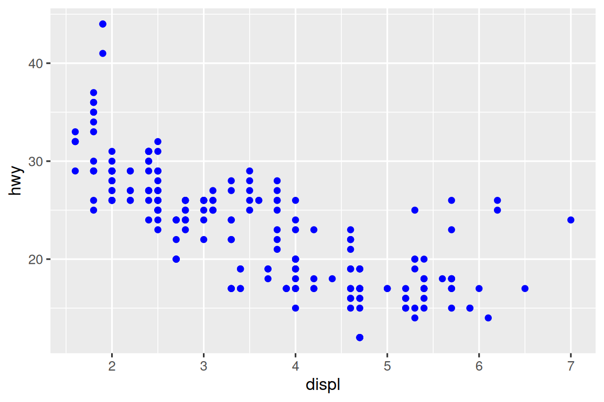
Ici, la couleur ne transmet pas d’information sur une variable, mais change simplement l’apparence du graphique. Vous devrez choisir une valeur qui a du sens pour cette esthétique :
- Le nom d’une couleur sous forme de chaîne de caractères, par ex.,
color = "blue" - La taille d’un point en mm, par ex.,
size = 1 - La forme d’un point sous forme de nombre, par ex.,
shape = 1, comme montré en Figure 9.1.
![Mappage entre les formes et les nombres qui les représentent : 0 - carré ouvert, 1 - cercle ouvert, 2 - triangle ouvert, 3 - plus, 4 - croix, 5 - diamant ouvert, 6 - triangle vers le bas ouvert, 7 - carré croix, 8 - astérisque, 9 - diamant plus, 10 - cercle plus, 11 - étoile, 12 - carré plus, 13 - cercle croix, 14 - carré triangle, 15 - carré, 16 - petit cercle, 17 - triangle, 18 - diamant, 19 - cercle, 20 - point, 21 - cercle rempli, 22 - carré rempli, 23 - diamant rempli, 24 - triangle rempli, 25 - triangle vers le bas rempli.](layers_files/figure-html/fig-shapes-1.png)
color et fill. Les formes creuses (0–14) ont une bordure déterminée par color ; les formes pleines (15–20) sont remplies avec color ; les formes remplies (21–25) ont une bordure de color et sont remplies avec fill. Les formes sont arrangées pour garder des formes similaires côte à côte.
Jusqu’à présent, nous avons discuté des esthétiques que nous pouvons mapper ou définir dans un nuage de points, lors de l’utilisation d’une geom point. Vous pouvez en savoir plus sur tous les mappages esthétiques possibles dans la vignette de spécifications d’esthétiques à https://ggplot2.tidyverse.org/articles/ggplot2-specs.html.
Les esthétiques spécifiques que vous pouvez utiliser pour un graphique dépendent de la geom que vous utilisez pour représenter les données. Dans la section suivante, nous approfondissons les geoms.
9.2.1 Exercices
Créez un nuage de points de
hwyvs.disploù les points sont des triangles remplis de rose.-
Pourquoi le code suivant n’a-t-il pas produit un graphique avec des points bleus ?
ggplot(mpg) + geom_point(aes(x = displ, y = hwy, color = "blue")) Que fait l’esthétique
stroke? Avec quelles formes est-elle compatible ? (Indice : utilisez?geom_point)Que se passe-t-il si vous mappez une esthétique à quelque chose d’autre qu’un nom de variable, comme
aes(color = displ < 5)? Notez que vous devrez aussi spécifier x et y.
9.3 Objets géométriques
En quoi ces deux graphiques se ressemblent-ils ?
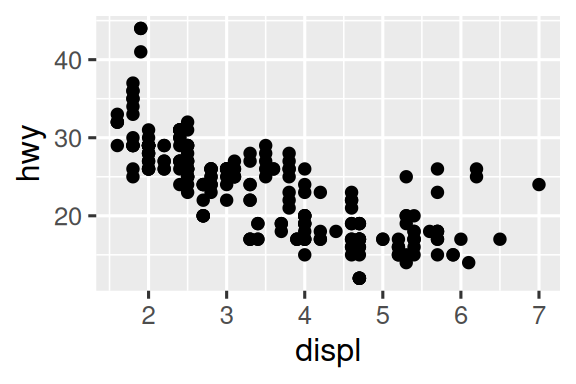
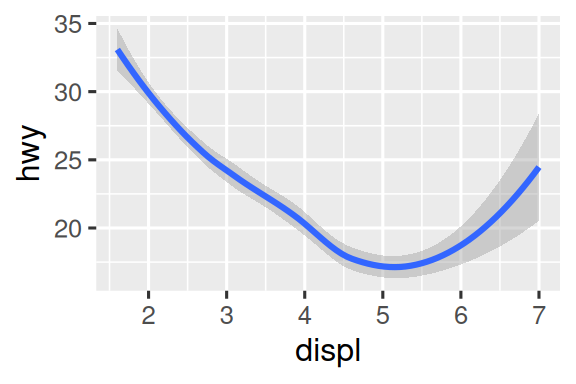
Les deux graphiques contiennent la même variable x, la même variable y, et décrivent tous deux les mêmes données. Mais les graphiques ne sont pas identiques. Chaque graphique utilise un objet géométrique différent, une geom, pour représenter les données. Le graphique de gauche utilise la géométrie point, et le graphique de droite utilise la géométrie smooth, une ligne lisse ajustée aux données.
Pour modifier la géométrie de votre graphique, changez la fonction geom que vous ajoutez à ggplot(). Par exemple, pour créer les graphiques ci-dessus, vous pouvez utiliser le code suivant :
# Gauche
ggplot(mpg, aes(x = displ, y = hwy)) +
geom_point()
# Droite
ggplot(mpg, aes(x = displ, y = hwy)) +
geom_smooth()
#> `geom_smooth()` using method = 'loess' and formula = 'y ~ x'Chaque fonction geom dans ggplot2 prend un argument mapping, défini soit localement dans la couche geom soit globalement dans la couche ggplot(). Cependant, chaque esthétique ne fonctionne pas avec chaque geom. Vous pouvez définir la forme d’un point, mais vous ne pouvez pas définir la « forme » d’une ligne. Si vous essayez, ggplot2 ignorera silencieusement ce mappage esthétique. En revanche, vous pourriez définir le linetype d’une ligne. geom_smooth() dessinera une ligne différente, avec un linetype différent, pour chaque valeur unique de la variable que vous mappez à linetype.
# Gauche
ggplot(mpg, aes(x = displ, y = hwy, shape = drv)) +
geom_smooth()
# Droite
ggplot(mpg, aes(x = displ, y = hwy, linetype = drv)) +
geom_smooth()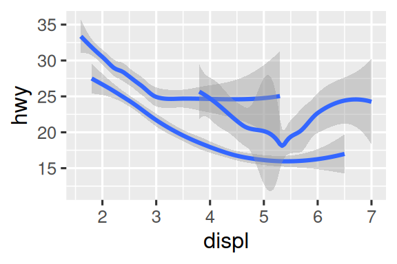
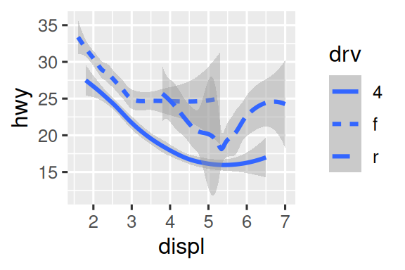
Ici, geom_smooth() sépare les voitures en trois lignes selon leur valeur drv, qui décrit la chaîne de transmission d’une voiture. Une ligne décrit tous les points qui ont une valeur 4, une ligne décrit tous les points qui ont une valeur f, et une ligne décrit tous les points qui ont une valeur r. Ici, 4 signifie quatre roues motrices, f signifie traction avant, et r signifie traction arrière.
Si cela semble étrange, nous pouvons clarifier en superposant les lignes sur les données brutes, puis en colorant tout selon drv.
ggplot(mpg, aes(x = displ, y = hwy, color = drv)) +
geom_point() +
geom_smooth(aes(linetype = drv))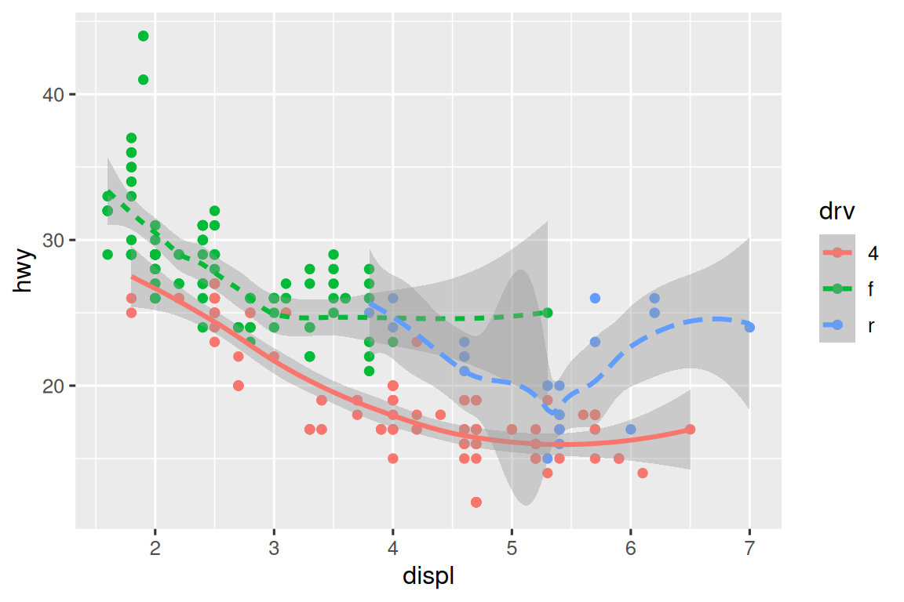
Notez que ce graphique contient deux geoms dans le même graphique.
De nombreuses geoms, comme geom_smooth(), utilisent un seul objet géométrique pour afficher plusieurs lignes de données. Pour ces geoms, vous pouvez définir l’esthétique group à une variable catégorique pour dessiner plusieurs objets. ggplot2 dessinera un objet séparé pour chaque valeur unique de la variable de groupement. En pratique, ggplot2 regroupera automatiquement les données pour ces geoms chaque fois que vous mappez une esthétique à une variable discrète (comme dans l’exemple linetype). C’est pratique de s’appuyer sur cette fonctionnalité car l’esthétique group en elle-même n’ajoute pas de légende ou de caractéristiques distinctives aux geoms.
# Gauche
ggplot(mpg, aes(x = displ, y = hwy)) +
geom_smooth()
# Milieu
ggplot(mpg, aes(x = displ, y = hwy)) +
geom_smooth(aes(group = drv))
# Droite
ggplot(mpg, aes(x = displ, y = hwy)) +
geom_smooth(aes(color = drv), show.legend = FALSE)![Trois graphiques, chacun avec l'efficacité énergétique sur autoroute sur l'axe des y et la cylindrée du moteur sur l'axe des x, où les données sont représentées par une courbe lisse. Le premier graphique ne contient que ces deux variables, le graphique du centre a trois courbes lisses séparées pour chaque niveau de chaîne de transmission, et le graphique de droite a non seulement les mêmes trois courbes lisses séparées pour chaque niveau de chaîne de transmission, mais ces courbes sont tracées en différentes couleurs. Les intervalles de confiance autour des courbes lisses sont également affichés.](layers_files/figure-html/unnamed-chunk-11-1.png)
![Trois graphiques, chacun avec l'efficacité énergétique sur autoroute sur l'axe des y et la cylindrée du moteur sur l'axe des x, où les données sont représentées par une courbe lisse. Le premier graphique ne contient que ces deux variables, le graphique du centre a trois courbes lisses séparées pour chaque niveau de chaîne de transmission, et le graphique de droite a non seulement les mêmes trois courbes lisses séparées pour chaque niveau de chaîne de transmission, mais ces courbes sont tracées en différentes couleurs. Les intervalles de confiance autour des courbes lisses sont également affichés.](layers_files/figure-html/unnamed-chunk-11-2.png)
![Trois graphiques, chacun avec l'efficacité énergétique sur autoroute sur l'axe des y et la cylindrée du moteur sur l'axe des x, où les données sont représentées par une courbe lisse. Le premier graphique ne contient que ces deux variables, le graphique du centre a trois courbes lisses séparées pour chaque niveau de chaîne de transmission, et le graphique de droite a non seulement les mêmes trois courbes lisses séparées pour chaque niveau de chaîne de transmission, mais ces courbes sont tracées en différentes couleurs. Les intervalles de confiance autour des courbes lisses sont également affichés.](layers_files/figure-html/unnamed-chunk-11-3.png)
Si vous placez des mappages dans une fonction geom, ggplot2 les traitera comme des mappages locaux pour la couche. Il utilisera ces mappages pour étendre ou remplacer les mappages globaux pour cette couche uniquement. Cela rend possible l’affichage d’esthétiques différentes dans différentes couches.
ggplot(mpg, aes(x = displ, y = hwy)) +
geom_point(aes(color = class)) +
geom_smooth()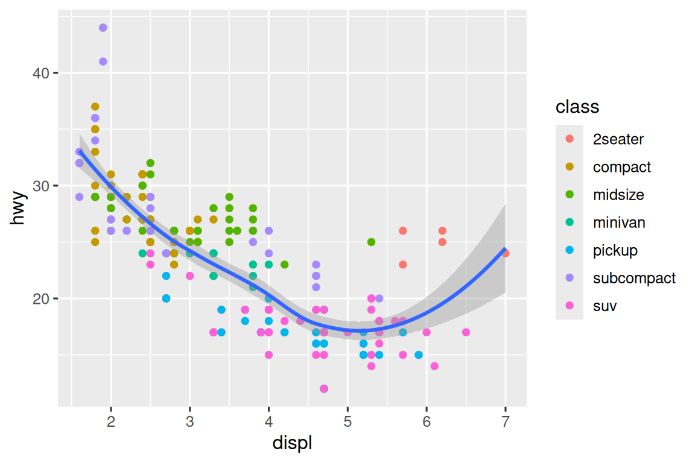
Vous pouvez utiliser la même idée pour spécifier différentes data pour chaque couche. Ici, nous utilisons des points rouges ainsi que des cercles ouverts pour mettre en évidence les voitures à deux places. L’argument de données local dans geom_point() remplace l’argument de données global dans ggplot() pour cette couche uniquement.
ggplot(mpg, aes(x = displ, y = hwy)) +
geom_point() +
geom_point(
data = mpg |> filter(class == "2seater"),
color = "red"
) +
geom_point(
data = mpg |> filter(class == "2seater"),
shape = "circle open", size = 3, color = "red"
)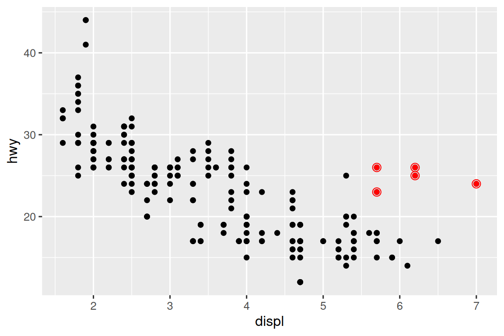
Les geoms sont les éléments fondamentaux de ggplot2. Vous pouvez complètement transformer l’apparence de votre graphique en changeant sa geom, et différentes geoms peuvent révéler différentes caractéristiques de vos données. Par exemple, l’histogramme et le graphique de densité ci-dessous révèlent que la distribution du kilométrage sur autoroute est bimodale et asymétrique à droite, tandis que la boîte à moustaches révèle deux valeurs aberrantes potentielles.
# Gauche
ggplot(mpg, aes(x = hwy)) +
geom_histogram(binwidth = 2)
# Milieu
ggplot(mpg, aes(x = hwy)) +
geom_density()
# Droite
ggplot(mpg, aes(x = hwy)) +
geom_boxplot()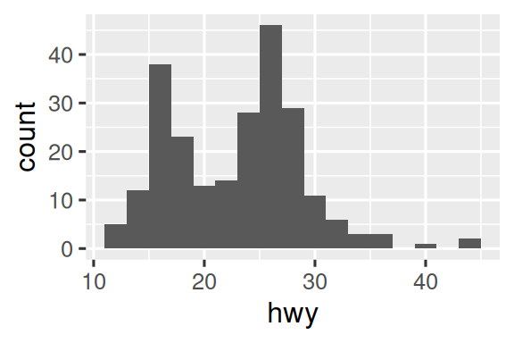
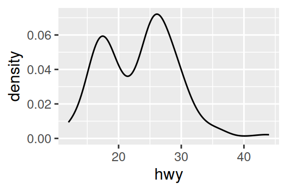
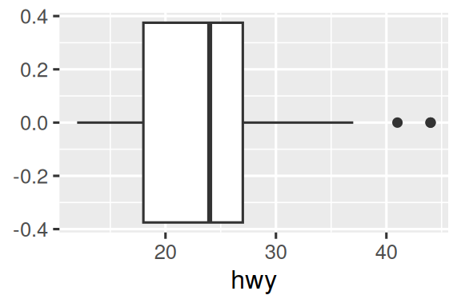
ggplot2 fournit plus de 40 geoms, mais elles ne couvrent pas tous les graphiques possibles. Si vous avez besoin d’une geom différente, nous vous recommandons d’abord de vérifier les packages d’extension pour voir si quelqu’un d’autre l’a déjà implémentée (voir https://exts.ggplot2.tidyverse.org/gallery/ pour un aperçu). Par exemple, le package ggridges (https://wilkelab.org/ggridges) est utile pour faire des graphiques en arêtes de poisson, qui peuvent être utiles pour visualiser la densité d’une variable numérique pour différents niveaux d’une variable catégorique. Dans le graphique suivant, non seulement nous avons utilisé une nouvelle geom (geom_density_ridges()), mais nous avons aussi mappé la même variable à plusieurs esthétiques (drv à y, fill et color) ainsi que défini une esthétique (alpha = 0.5) pour rendre les courbes de densité transparentes.
library(ggridges)
ggplot(mpg, aes(x = hwy, y = drv, fill = drv, color = drv)) +
geom_density_ridges(alpha = 0.5, show.legend = FALSE)
#> Picking joint bandwidth of 1.28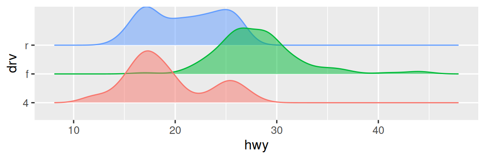
Le meilleur endroit pour avoir un aperçu global de toutes les geoms que ggplot2 offre ainsi que de toutes les fonctions du package, est la page de référence : https://ggplot2.tidyverse.org/reference. Pour en savoir plus sur une seule geom, utilisez l’aide (par ex., ?geom_smooth).
9.3.1 Exercices
Quelle geom utiliseriez-vous pour dessiner un graphique linéaire ? Une boîte à moustaches ? Un histogramme ? Un graphique en aires ?
-
Plus tôt dans ce chapitre nous avons utilisé
show.legendsans l’expliquer :ggplot(mpg, aes(x = displ, y = hwy)) + geom_smooth(aes(color = drv), show.legend = FALSE)Que fait
show.legend = FALSEici ? Que se passe-t-il si vous le supprimez ? Pourquoi pensez-vous que nous l’avons utilisé plus tôt ? Que fait l’argument
sedegeom_smooth()?-
Recréez le code R nécessaire pour générer les graphiques suivants. Notez que partout où une variable catégorique est utilisée dans le graphique, c’est
drv.![Il y a six nuages de points dans cette figure, arrangés dans une grille 3x2. Dans tous les graphiques, l'efficacité énergétique sur autoroute des voitures est sur l'axe y et la cylindrée du moteur est sur l'axe x. Le premier graphique montre tous les points en noir avec une courbe lisse superposée. Dans le deuxième graphique, les points sont aussi tous noirs, avec des courbes lisses séparées superposées pour chaque niveau de chaîne de transmission. Sur le troisième graphique, les points et les courbes lisses sont représentés en différentes couleurs pour chaque niveau de chaîne de transmission. Dans le quatrième graphique, les points sont représentés en différentes couleurs pour chaque niveau de chaîne de transmission, mais il n'y a qu'une seule ligne lisse ajustée à l'ensemble des données. Dans le cinquième graphique, les points sont représentés en différentes couleurs pour chaque niveau de chaîne de transmission, et une courbe lisse séparée avec différents types de lignes est ajustée à chaque niveau de chaîne de transmission. Et enfin dans le sixième graphique, les points sont représentés en différentes couleurs pour chaque niveau de chaîne de transmission et ils ont une bordure blanche épaisse.](layers_files/figure-html/unnamed-chunk-17-1.png)
![Il y a six nuages de points dans cette figure, arrangés dans une grille 3x2. Dans tous les graphiques, l'efficacité énergétique sur autoroute des voitures est sur l'axe y et la cylindrée du moteur est sur l'axe x. Le premier graphique montre tous les points en noir avec une courbe lisse superposée. Dans le deuxième graphique, les points sont aussi tous noirs, avec des courbes lisses séparées superposées pour chaque niveau de chaîne de transmission. Sur le troisième graphique, les points et les courbes lisses sont représentés en différentes couleurs pour chaque niveau de chaîne de transmission. Dans le quatrième graphique, les points sont représentés en différentes couleurs pour chaque niveau de chaîne de transmission, mais il n'y a qu'une seule ligne lisse ajustée à l'ensemble des données. Dans le cinquième graphique, les points sont représentés en différentes couleurs pour chaque niveau de chaîne de transmission, et une courbe lisse séparée avec différents types de lignes est ajustée à chaque niveau de chaîne de transmission. Et enfin dans le sixième graphique, les points sont représentés en différentes couleurs pour chaque niveau de chaîne de transmission et ils ont une bordure blanche épaisse.](layers_files/figure-html/unnamed-chunk-17-2.png)
![Il y a six nuages de points dans cette figure, arrangés dans une grille 3x2. Dans tous les graphiques, l'efficacité énergétique sur autoroute des voitures est sur l'axe y et la cylindrée du moteur est sur l'axe x. Le premier graphique montre tous les points en noir avec une courbe lisse superposée. Dans le deuxième graphique, les points sont aussi tous noirs, avec des courbes lisses séparées superposées pour chaque niveau de chaîne de transmission. Sur le troisième graphique, les points et les courbes lisses sont représentés en différentes couleurs pour chaque niveau de chaîne de transmission. Dans le quatrième graphique, les points sont représentés en différentes couleurs pour chaque niveau de chaîne de transmission, mais il n'y a qu'une seule ligne lisse ajustée à l'ensemble des données. Dans le cinquième graphique, les points sont représentés en différentes couleurs pour chaque niveau de chaîne de transmission, et une courbe lisse séparée avec différents types de lignes est ajustée à chaque niveau de chaîne de transmission. Et enfin dans le sixième graphique, les points sont représentés en différentes couleurs pour chaque niveau de chaîne de transmission et ils ont une bordure blanche épaisse.](layers_files/figure-html/unnamed-chunk-17-3.png)
![Il y a six nuages de points dans cette figure, arrangés dans une grille 3x2. Dans tous les graphiques, l'efficacité énergétique sur autoroute des voitures est sur l'axe y et la cylindrée du moteur est sur l'axe x. Le premier graphique montre tous les points en noir avec une courbe lisse superposée. Dans le deuxième graphique, les points sont aussi tous noirs, avec des courbes lisses séparées superposées pour chaque niveau de chaîne de transmission. Sur le troisième graphique, les points et les courbes lisses sont représentés en différentes couleurs pour chaque niveau de chaîne de transmission. Dans le quatrième graphique, les points sont représentés en différentes couleurs pour chaque niveau de chaîne de transmission, mais il n'y a qu'une seule ligne lisse ajustée à l'ensemble des données. Dans le cinquième graphique, les points sont représentés en différentes couleurs pour chaque niveau de chaîne de transmission, et une courbe lisse séparée avec différents types de lignes est ajustée à chaque niveau de chaîne de transmission. Et enfin dans le sixième graphique, les points sont représentés en différentes couleurs pour chaque niveau de chaîne de transmission et ils ont une bordure blanche épaisse.](layers_files/figure-html/unnamed-chunk-17-4.png)
![Il y a six nuages de points dans cette figure, arrangés dans une grille 3x2. Dans tous les graphiques, l'efficacité énergétique sur autoroute des voitures est sur l'axe y et la cylindrée du moteur est sur l'axe x. Le premier graphique montre tous les points en noir avec une courbe lisse superposée. Dans le deuxième graphique, les points sont aussi tous noirs, avec des courbes lisses séparées superposées pour chaque niveau de chaîne de transmission. Sur le troisième graphique, les points et les courbes lisses sont représentés en différentes couleurs pour chaque niveau de chaîne de transmission. Dans le quatrième graphique, les points sont représentés en différentes couleurs pour chaque niveau de chaîne de transmission, mais il n'y a qu'une seule ligne lisse ajustée à l'ensemble des données. Dans le cinquième graphique, les points sont représentés en différentes couleurs pour chaque niveau de chaîne de transmission, et une courbe lisse séparée avec différents types de lignes est ajustée à chaque niveau de chaîne de transmission. Et enfin dans le sixième graphique, les points sont représentés en différentes couleurs pour chaque niveau de chaîne de transmission et ils ont une bordure blanche épaisse.](layers_files/figure-html/unnamed-chunk-17-5.png)
![Il y a six nuages de points dans cette figure, arrangés dans une grille 3x2. Dans tous les graphiques, l'efficacité énergétique sur autoroute des voitures est sur l'axe y et la cylindrée du moteur est sur l'axe x. Le premier graphique montre tous les points en noir avec une courbe lisse superposée. Dans le deuxième graphique, les points sont aussi tous noirs, avec des courbes lisses séparées superposées pour chaque niveau de chaîne de transmission. Sur le troisième graphique, les points et les courbes lisses sont représentés en différentes couleurs pour chaque niveau de chaîne de transmission. Dans le quatrième graphique, les points sont représentés en différentes couleurs pour chaque niveau de chaîne de transmission, mais il n'y a qu'une seule ligne lisse ajustée à l'ensemble des données. Dans le cinquième graphique, les points sont représentés en différentes couleurs pour chaque niveau de chaîne de transmission, et une courbe lisse séparée avec différents types de lignes est ajustée à chaque niveau de chaîne de transmission. Et enfin dans le sixième graphique, les points sont représentés en différentes couleurs pour chaque niveau de chaîne de transmission et ils ont une bordure blanche épaisse.](layers_files/figure-html/unnamed-chunk-17-6.png)
9.4 Facettes
Dans le Chapitre 1 vous avez appris à faire des facettes avec facet_wrap(), qui divise un graphique en sous-graphiques qui affichent chacun un sous-ensemble de données basé sur une variable catégorique.
ggplot(mpg, aes(x = displ, y = hwy)) +
geom_point() +
facet_wrap(~cyl)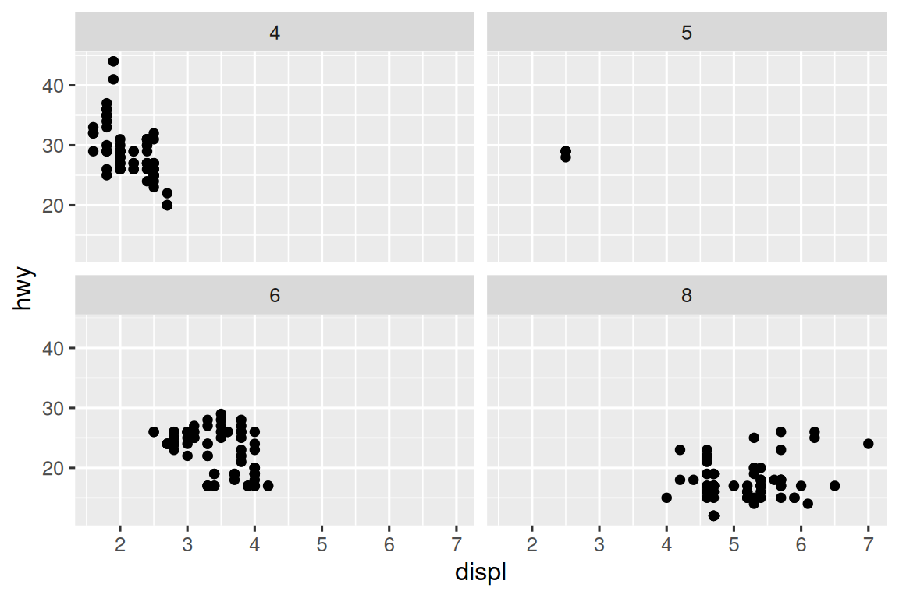
Pour faire des facettes en combinant deux variables, passez de facet_wrap() à facet_grid(). Le premier argument de facet_grid() est aussi une formule, mais maintenant c’est une formule bilatérale : rows ~ cols.
ggplot(mpg, aes(x = displ, y = hwy)) +
geom_point() +
facet_grid(drv ~ cyl)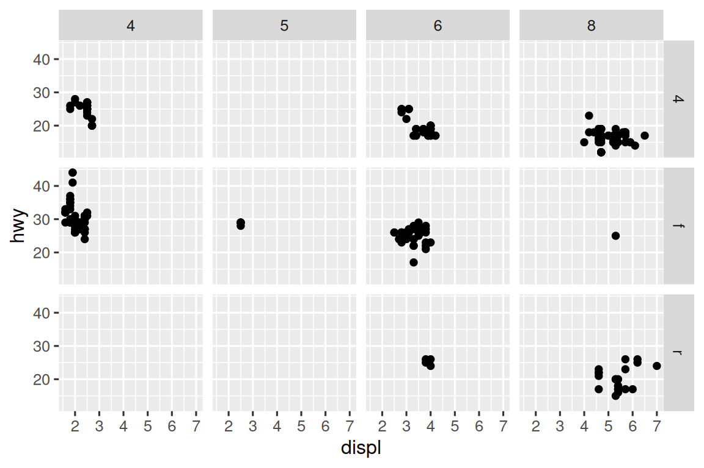
Par défaut, chacune des facettes partage la même échelle et plage pour les axes x et y. C’est utile quand vous voulez comparer les données entre les facettes, mais cela peut être limitant quand vous voulez mieux visualiser la relation au sein de chaque facette. Définir l’argument scales dans une fonction de facettage à "free_x" permettra différentes échelles de l’axe x dans les colonnes, "free_y" permettra différentes échelles de l’axe y dans les lignes, et "free" permettra les deux.
ggplot(mpg, aes(x = displ, y = hwy)) +
geom_point() +
facet_grid(drv ~ cyl, scales = "free")
9.4.1 Exercices
Que se passe-t-il si vous facettez sur une variable continue ?
-
Que signifient les cellules vides dans le graphique ci-dessus avec
facet_grid(drv ~ cyl)? Exécutez le code suivant. Comment se rapportent-elles au graphique résultant ?ggplot(mpg) + geom_point(aes(x = drv, y = cyl)) -
Quels graphiques le code suivant crée-t-il ? Que fait
.?ggplot(mpg) + geom_point(aes(x = displ, y = hwy)) + facet_grid(drv ~ .) ggplot(mpg) + geom_point(aes(x = displ, y = hwy)) + facet_grid(. ~ cyl) -
Prenez le premier graphique facetté de cette section :
ggplot(mpg) + geom_point(aes(x = displ, y = hwy)) + facet_wrap(~ cyl, nrow = 2)Quels sont les avantages d’utiliser les facettes plutôt que l’esthétique color ? Quels sont les inconvénients ? Comment cet équilibre pourrait-il changer si vous aviez un jeu de données plus grand ?
Lisez
?facet_wrap. Que faitnrow? Que faitncol? Quelles autres options contrôlent la disposition des panneaux individuels ? Pourquoifacet_grid()n’a-t-il pas d’argumentsnrowetncol?-
Lequel des graphiques suivants facilite la comparaison de la cylindrée du moteur (
displ) entre les voitures avec différentes chaînes de transmission ? Quel est le bon moment pour placer une variable de facettage dans les lignes ou les colonnes ?ggplot(mpg, aes(x = displ)) + geom_histogram() + facet_grid(drv ~ .) ggplot(mpg, aes(x = displ)) + geom_histogram() + facet_grid(. ~ drv) -
Recréez le graphique suivant en utilisant
facet_wrap()à la place defacet_grid(). Comment les positions des étiquettes de facette changent-elles ?ggplot(mpg) + geom_point(aes(x = displ, y = hwy)) + facet_grid(drv ~ .)
9.5 Transformations statistiques
Considérez un graphique en barres, créé avec geom_bar() ou geom_col(). Le graphique suivant affiche le nombre total de diamants dans le jeu de données diamonds, groupés par cut (taillage). Le jeu de données diamonds est dans le package ggplot2 et contient des informations sur ~54 000 diamants, incluant le price, carat, color, clarity et cut de chaque diamant. Le graphique montre que plus de diamants sont disponibles avec des tailles de haute qualité qu’avec des tailles de basse qualité.
Sur l’axe x, le graphique affiche cut, une variable de diamonds. Sur l’axe y, il affiche count, mais count n’est pas une variable de diamonds ! D’où vient count ? De nombreux graphiques, comme les nuages de points, tracent les valeurs brutes de votre jeu de données. D’autres graphiques, comme les diagrammes en barres, calculent de nouvelles valeurs à tracer :
Les diagrammes en barres, histogrammes et polygones de fréquence regroupent vos données, puis tracent les dénombrements des classes, le nombre de points qui se situent dans chaque classe.
Les lisseurs (
geom_smooth) ajustent un modèle à vos données, puis tracent les prédictions du modèle.Les boîtes à moustaches calculent le résumé à cinq chiffres de la distribution, puis affichent ce résumé dans une boîte spécialement formatée.
L’algorithme utilisé pour calculer de nouvelles valeurs pour un graphique s’appelle un stat, abréviation de transformation statistique. La Figure 9.2 montre comment ce processus fonctionne avec geom_bar().

Vous pouvez apprendre quel stat une geom utilise en inspectant la valeur par défaut de l’argument stat. Par exemple, ?geom_bar montre que la valeur par défaut pour stat est “count”, ce qui signifie que geom_bar() utilise stat_count(). stat_count() est documenté sur la même page que geom_bar(). Si vous faites défiler vers le bas, la section appelée « Computed variables » explique qu’elle calcule deux nouvelles variables : count et prop.
Chaque geom a un stat par défaut ; et chaque stat a une geom par défaut. Cela signifie que vous pouvez généralement utiliser les geoms sans vous soucier de la transformation statistique sous-jacente. Cependant, il y a trois raisons pour lesquelles vous pourriez avoir besoin de spécifier un stat explicitement :
-
Si vous voulez remplacer le stat par défaut. Dans le code ci-dessous, nous modifions le stat de
geom_bar()de count (par défaut) à identity. Cela nous permet de mapper la hauteur des barres aux valeurs brutes d’une variable y. -
Si vous voulez remplacer le mappage par défaut des variables transformées aux esthétiques. Par exemple, vous pourriez vouloir afficher un graphique en barres de proportions, plutôt que de dénombrements :
ggplot(diamonds, aes(x = cut, y = after_stat(prop), group = 1)) + geom_bar()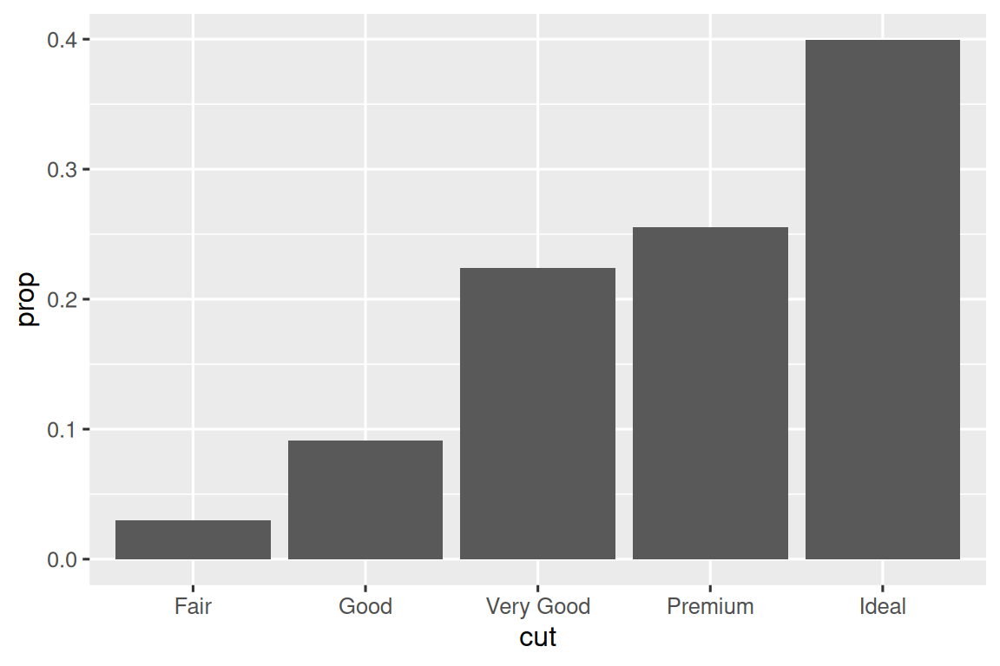
Pour trouver les variables possibles qui peuvent être calculées par le stat, cherchez la section intitulée « computed variables » dans l’aide pour
geom_bar(). -
Si vous voulez attirer davantage l’attention sur la transformation statistique dans votre code. Par exemple, vous pourriez utiliser
stat_summary(), qui résume les valeurs y pour chaque valeur x unique, pour attirer l’attention sur le résumé que vous calculez :ggplot(diamonds) + stat_summary( aes(x = cut, y = depth), fun.min = min, fun.max = max, fun = median )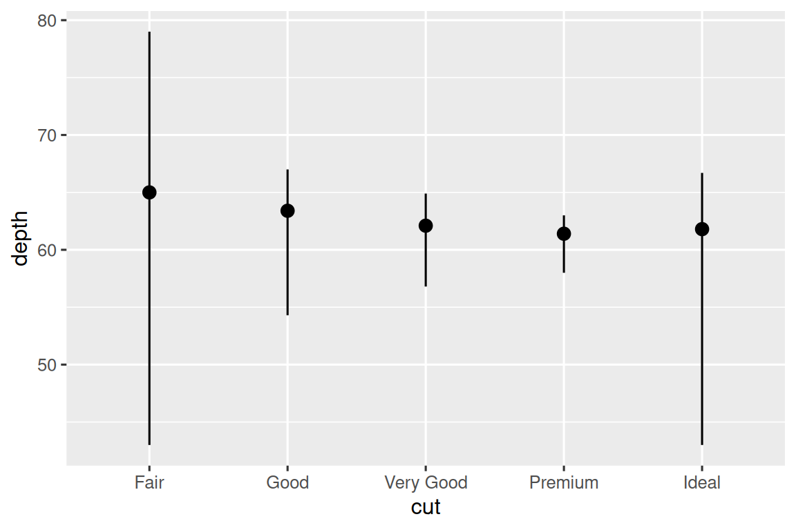
ggplot2 fournit plus de 20 stats à votre disposition. Chaque stat est une fonction, donc vous pouvez obtenir de l’aide de la manière habituelle, par ex., ?stat_bin.
9.5.1 Exercices
Quelle est la geom par défaut associée à
stat_summary()? Comment pourriez-vous réécrire le graphique précédent pour utiliser cette fonction geom à la place de la fonction stat ?Que fait
geom_col()? Quelle est la différence avecgeom_bar()?La plupart des geoms et stats viennent par paires qui sont presque toujours utilisées ensemble. Faites une liste de toutes les paires. Qu’ont-elles en commun ? (Indice : parcourez la documentation.)
Quelles variables
stat_smooth()calcule-t-elle ? Quels arguments contrôlent son comportement ?-
Dans notre graphique en barres de proportions, nous avions besoin de définir
group = 1. Pourquoi ? En d’autres termes, quel est le problème avec ces deux graphiques ?ggplot(diamonds, aes(x = cut, y = after_stat(prop))) + geom_bar() ggplot(diamonds, aes(x = cut, fill = color, y = after_stat(prop))) + geom_bar()
9.6 Ajustements de position
Il y a un dernier tour de magie associé aux diagrammes en barres. Vous pouvez colorer un graphique en barres en utilisant soit l’esthétique color, soit, de manière plus utile, l’esthétique fill :
# Gauche
ggplot(mpg, aes(x = drv, color = drv)) +
geom_bar()
# Droite
ggplot(mpg, aes(x = drv, fill = drv)) +
geom_bar()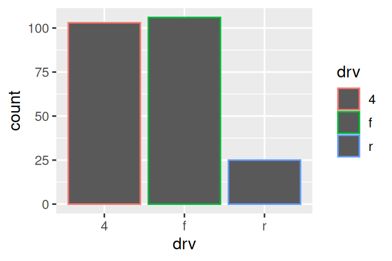
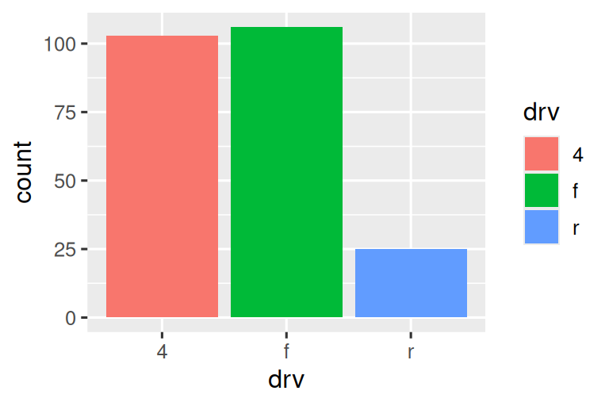
Notez ce qui se passe si vous mappez l’esthétique fill à une autre variable, comme class : les barres sont automatiquement empilées. Chaque rectangle coloré représente une combinaison de drv et class.
L’empilement est effectué automatiquement en utilisant l’ajustement de position spécifié par l’argument position. Si vous ne voulez pas un graphique en barres empilé, vous pouvez utiliser l’une des trois autres options : "identity", "dodge" ou "fill".
-
position = "identity"placera chaque objet exactement où il se situe dans le contexte du graphique. Ce n’est pas très utile pour les barres, car cela les chevauche. Pour voir ce chevauchement, nous devons soit rendre les barres légèrement transparentes en définissantalphaà une petite valeur, soit complètement transparentes en définissantfill = NA.# Gauche ggplot(mpg, aes(x = drv, fill = class)) + geom_bar(alpha = 1/5, position = "identity") # Droite ggplot(mpg, aes(x = drv, color = class)) + geom_bar(fill = NA, position = "identity")![Graphique en barres segmenté des types de chaîne de transmission de voitures, où chaque barre est remplie avec des couleurs pour les classes de voitures. Les hauteurs des segments colorés représentent le nombre de voitures avec un niveau de classe donné au sein d'un niveau de chaîne de transmission donné. Cependant, les segments se chevauchent. Dans le premier graphique, les barres sont remplies avec des couleurs transparentes et dans le deuxième graphique, elles ne sont que décrites avec la couleur.](layers_files/figure-html/unnamed-chunk-33-1.png)
![Graphique en barres segmenté des types de chaîne de transmission de voitures, où chaque barre est remplie avec des couleurs pour les classes de voitures. Les hauteurs des segments colorés représentent le nombre de voitures avec un niveau de classe donné au sein d'un niveau de chaîne de transmission donné. Cependant, les segments se chevauchent. Dans le premier graphique, les barres sont remplies avec des couleurs transparentes et dans le deuxième graphique, elles ne sont que décrites avec la couleur.](layers_files/figure-html/unnamed-chunk-33-2.png)
L’ajustement de la position identity est plus utile pour les geoms en 2D, comme les points pour lesquels c’est la valeur par défaut.
position = "fill"fonctionne comme l’empilement, mais fait que chaque ensemble de barres empilées a la même hauteur. Cela facilite la comparaison des proportions entre les groupes.-
position = "dodge"place les objets qui se chevauchent directement à côté l’un de l’autre. Cela facilite la comparaison des valeurs individuelles.# Gauche ggplot(mpg, aes(x = drv, fill = class)) + geom_bar(position = "fill") # Droite ggplot(mpg, aes(x = drv, fill = class)) + geom_bar(position = "dodge")![À gauche, graphique en barres segmenté des types de chaîne de transmission de voitures, où chaque barre est remplie avec des couleurs pour les niveaux de classe. La hauteur de chaque barre est 1 et les hauteurs des segments colorés représentent les proportions de voitures avec un niveau de classe donné au sein d'un niveau de chaîne de transmission donné. À droite, graphique en barres décalées des types de chaîne de transmission de voitures. Les barres décalées sont groupées par niveaux de chaîne de transmission. Au sein de chaque groupe, les barres représentent chaque niveau de classe. Certaines classes sont représentées au sein de certaines chaînes de transmission et non représentées dans d'autres, ce qui entraîne un nombre inégal de barres au sein de chaque groupe. Les hauteurs de ces barres représentent le nombre de voitures avec un niveau de chaîne de transmission et de classe donné.](layers_files/figure-html/unnamed-chunk-34-1.png)
![À gauche, graphique en barres segmenté des types de chaîne de transmission de voitures, où chaque barre est remplie avec des couleurs pour les niveaux de classe. La hauteur de chaque barre est 1 et les hauteurs des segments colorés représentent les proportions de voitures avec un niveau de classe donné au sein d'un niveau de chaîne de transmission donné. À droite, graphique en barres décalées des types de chaîne de transmission de voitures. Les barres décalées sont groupées par niveaux de chaîne de transmission. Au sein de chaque groupe, les barres représentent chaque niveau de classe. Certaines classes sont représentées au sein de certaines chaînes de transmission et non représentées dans d'autres, ce qui entraîne un nombre inégal de barres au sein de chaque groupe. Les hauteurs de ces barres représentent le nombre de voitures avec un niveau de chaîne de transmission et de classe donné.](layers_files/figure-html/unnamed-chunk-34-2.png)
Il y a un autre type d’ajustement qui n’est pas utile pour les diagrammes en barres, mais qui peut être très utile pour les nuages de points. Souvenez-vous de notre premier nuage de points. Avez-vous remarqué que le graphique affiche seulement 126 points alors qu’il y a 234 observations dans le jeu de données ?
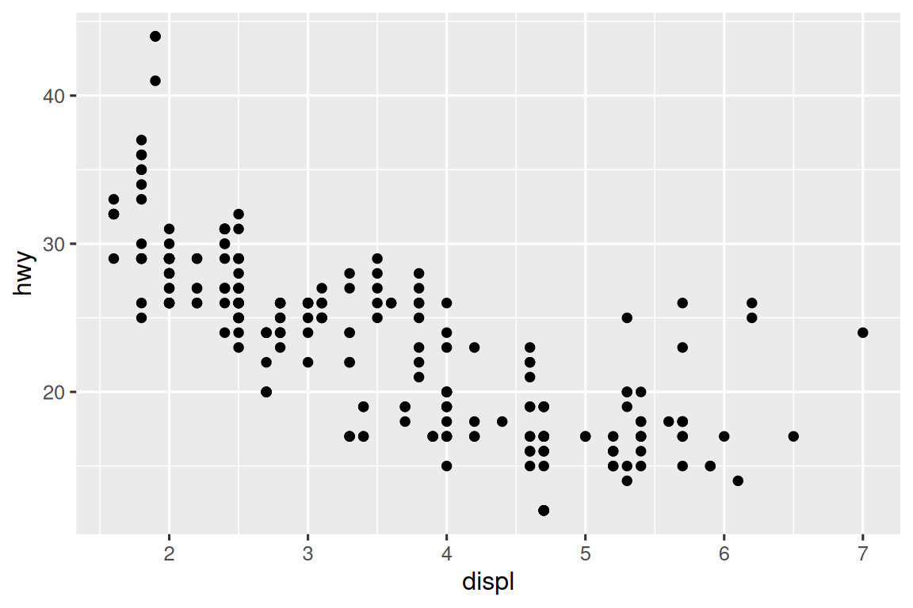
Les valeurs sous-jacentes de hwy et displ sont arrondies de sorte que les points apparaissent sur une grille, et de nombreux points se chevauchent. Ce problème est connu sous le nom de superposition (overplotting). Cet arrangement rend difficile la visualisation de la distribution des données. Les points de données sont-ils répartis également dans tout le graphique, ou existe-t-il une combinaison spéciale de hwy et displ qui contient 109 valeurs ?
Vous pouvez éviter ce chevauchement en définissant l’ajustement de position sur « jitter ». position = "jitter" ajoute du bruit aléatoire à chaque point. Cela permet de répartir les points, car il est peu probable que deux points reçoivent la même quantité de bruit aléatoire.
ggplot(mpg, aes(x = displ, y = hwy)) +
geom_point(position = "jitter")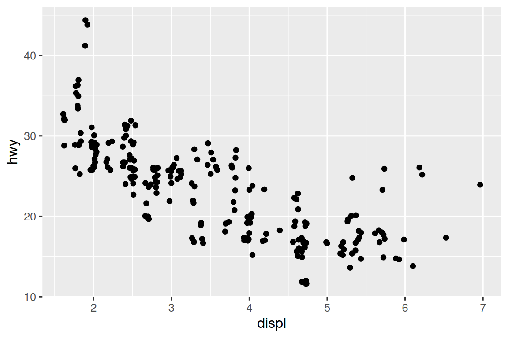
Ajouter du caractère aléatoire semble être une façon étrange d’améliorer votre graphique, mais bien qu’il le rende moins précis à petites échelles, il le rend plus révélateur à grandes échelles. Puisque c’est si utile, ggplot2 dispose d’un raccourci pour geom_point(position = "jitter") : geom_jitter().
Pour en savoir plus sur un ajustement de position, consultez la page d’aide associée à chaque ajustement : ?position_dodge, ?position_fill, ?position_identity, ?position_jitter et ?position_stack.
9.6.1 Exercices
-
Quel est le problème avec le graphique suivant ? Comment pourriez-vous l’améliorer ?
ggplot(mpg, aes(x = cty, y = hwy)) + geom_point() -
Quelle est, le cas échéant, la différence entre les deux graphiques ? Pourquoi ?
ggplot(mpg, aes(x = displ, y = hwy)) + geom_point() ggplot(mpg, aes(x = displ, y = hwy)) + geom_point(position = "identity") Quels paramètres de
geom_jitter()contrôlent la quantité de décalage ?Comparez et contrastez
geom_jitter()avecgeom_count().Quel est l’ajustement de position par défaut pour
geom_boxplot()? Créez une visualisation du jeu de donnéesmpgqui le démontre.
9.7 Systèmes de coordonnées
Les systèmes de coordonnées sont probablement la partie la plus compliquée de ggplot2. Le système de coordonnées par défaut est le système de coordonnées cartésien où les positions x et y agissent indépendamment pour déterminer la localisation de chaque point. Il y a deux autres systèmes de coordonnées qui sont parfois utiles.
-
coord_quickmap()permet de définir correctement le format d’image des cartes géographiques. C’est très important si vous tracez des données spatiales avec ggplot2. Nous n’avons pas la place d’aborder le sujet des cartes dans ce livre, mais vous pouvez en savoir plus dans le chapitre Cartes de ggplot2: Elegant graphics for data analysis.nz <- map_data("nz") ggplot(nz, aes(x = long, y = lat, group = group)) + geom_polygon(fill = "white", color = "black") ggplot(nz, aes(x = long, y = lat, group = group)) + geom_polygon(fill = "white", color = "black") + coord_quickmap()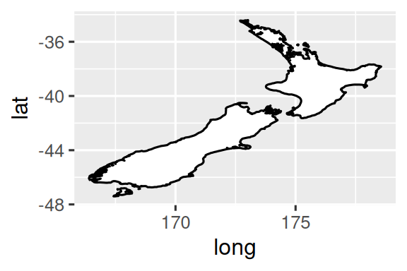
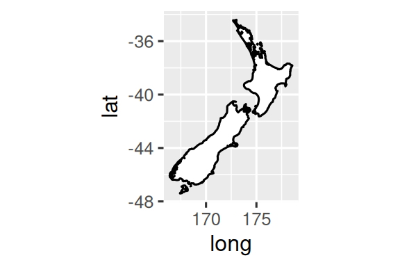
-
coord_polar()utilise les coordonnées polaires. Les coordonnées polaires révèlent une connexion intéressante entre un graphique en barres et un graphique de Coxcomb.bar <- ggplot(data = diamonds) + geom_bar( mapping = aes(x = clarity, fill = clarity), show.legend = FALSE, width = 1 ) + theme(aspect.ratio = 1) bar + coord_flip() bar + coord_polar()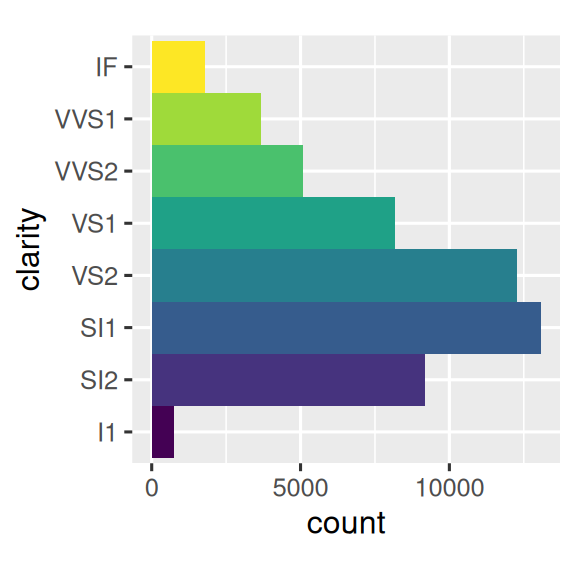
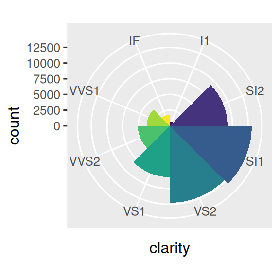
9.7.1 Exercices
Transformez un graphique en barres empilé en un diagramme circulaire en utilisant
coord_polar().Quelle est la différence entre
coord_quickmap()etcoord_map()?-
Que vous dit le graphique suivant sur la relation entre les miles par gallon en ville et sur autoroute ? Pourquoi
coord_fixed()est-il important ? Que faitgeom_abline()?ggplot(data = mpg, mapping = aes(x = cty, y = hwy)) + geom_point() + geom_abline() + coord_fixed()
9.8 La grammaire en couches des graphiques
Nous pouvons approfondir le modèle de représentation graphique que vous avez appris dans la Section 1.3 en ajoutant des ajustements de position, des stats, des systèmes de coordonnées et des facettes :
ggplot(data = <DATA>) +
<GEOM_FUNCTION>(
mapping = aes(<MAPPINGS>),
stat = <STAT>,
position = <POSITION>
) +
<COORDINATE_FUNCTION> +
<FACET_FUNCTION>Notre nouveau modèle prend sept paramètres ; les mots entre <> qui apparaissent dans le modèle. En pratique, vous devez rarement fournir les sept paramètres pour créer un graphique car ggplot2 fournira des valeurs par défaut, sauf pour les données, les mappages et la fonction geom.
Les sept paramètres du modèle composent la grammaire des graphiques, un système formel pour construire des graphiques. La grammaire des graphiques est basée sur l’idée que vous pouvez décrire de façon unique n’importe quel graphique comme une combinaison d’un jeu de données, d’une géometrie, d’un ensemble de mappages, d’un stat, d’un ajustement de position, d’un système de coordonnées, d’un schéma de facettage et d’un thème.
Pour voir comment cela fonctionne, pensez à comment vous pourriez construire un graphique basique à partir de zéro : vous pourriez commencer par un jeu de données, puis le transformer en information que vous voulez afficher (avec un stat). Ensuite, vous pourriez choisir un objet géométrique pour représenter chaque observation dans les données transformées. Vous pourriez ensuite utiliser les propriétés esthétiques des geoms pour représenter les variables dans les données. Vous mapperiez les valeurs de chaque variable aux niveaux d’une esthétique. Ces étapes sont illustrées en Figure 9.3. Vous sélectionneriez ensuite un système de coordonnées pour placer les geoms, en utilisant la localisation des objets (qui est elle-même une propriété esthétique) pour afficher les valeurs des variables x et y.
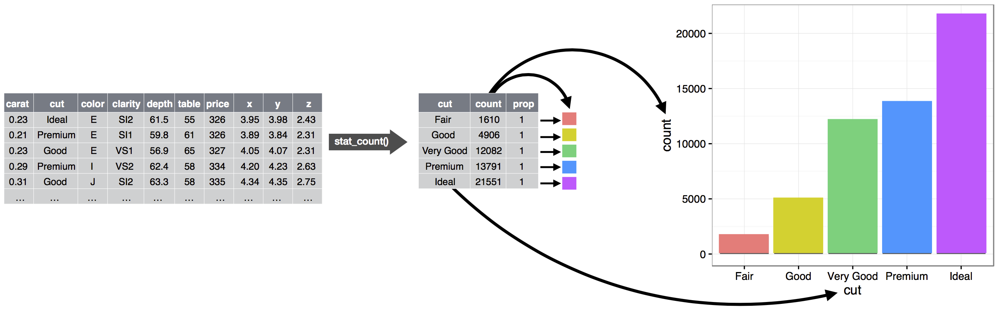
À ce stade, vous auriez un graphique complet, mais vous pourriez ensuite ajuster les positions des geoms au sein du système de coordonnées (un ajustement de position) ou diviser le graphique en sous-graphiques (facettage). Vous pourriez aussi étendre le graphique en ajoutant une ou plusieurs couches supplémentaires, où chaque couche supplémentaire utilise un jeu de données, une geom, un ensemble de mappages, un stat et un ajustement de position.
Vous pourriez utiliser cette méthode pour construire n’importe quel graphique. En d’autres termes, vous pouvez utiliser le modèle de code que vous avez appris dans ce chapitre pour construire des centaines de milliers de graphiques uniques.
Si vous voulez en savoir plus sur les fondations théoriques de ggplot2, vous apprécierez peut-être la lecture de « The Layered Grammar of Graphics », un article scientifique qui décrit la théorie de ggplot2 en détail.
9.9 Résumé
Dans ce chapitre, vous avez appris la grammaire en couches des graphiques en commençant par les esthétiques et les géométries pour construire un graphique simple, les facettes pour diviser le graphique en sous-ensembles, les statistiques pour comprendre comment les geoms sont calculées, les ajustements de position pour contrôler les détails précis de position quand les geoms pourraient se chevaucher, et les systèmes de coordonnées qui vous permettent de modifier fondamentalement ce que x et y signifient. Il reste un aspect que nous n’avons pas encore abordé : le thème, que nous présenterons dans la Section 11.5.
Deux ressources très utiles pour avoir un aperçu des fonctionnalités complètes de ggplot2 sont l’aide-mémoire ggplot2 (que vous pouvez trouver à https://posit.co/resources/cheatsheets) et le site web du package ggplot2 (https://ggplot2.tidyverse.org).
Une leçon importante à retenir de ce chapitre est que quand vous avez besoin d’une geom qui n’est pas fournie par ggplot2, c’est toujours bien de vérifier si quelqu’un d’autre a déjà résolu votre problème en créant un package d’extension ggplot2 qui offre cette geom.